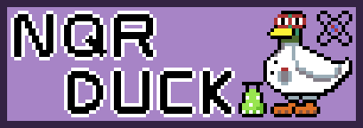

Welcome to the NQRduckumentation#
This program is intended as an educational tool for magnetic resonance experiments (NMR, NQR, …). Its focus lies on modular behaviour depending on what nqrduck modules are installed.
Installation
The NQRduck can be easily installed via pip. Additional modules can be installed via an included install wizard.
Tutorials
There exists a range of different modules for the NQRduck software. The tutorials range from simulation to magnetic resonance experiments.
Software Structure
The NQRduck comes with a user friendly PyQt6 based user interface. Different Python modules can be installed via pip to customize the functionality of the program.
API Reference
API Documentation of the program can be found here.
The core of the program is the nqrduck. It provides a central interface for communication between the different modules. The nqrduck core loads all the installed modules in your python environment.
The focus for spectrometers currently lies on LimeSDR based spectrometers (LimeSDR USB, LimeSDR Mini 2.0).
Additionally, the nqrduck framework has it’s own modules for vendor independent control execution of pulse sequences. The pulse programming framework is called QuackSeq and a detailed documentation can be found here. Different QuackSeq sequences can either be executed on the LimeSDR or on a simulated spectrometer.